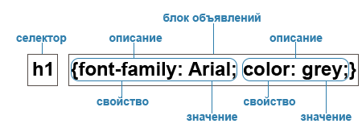

CSS (Cascading Style Sheets) — язык таблиц стилей, который позволяет прикреплять стиль (например, шрифты и цвет) к структурированным документам (например, документам HTML и приложениям XML).

Виды таблиц стилей
- Внешняя таблица стилей: представляет собой текстовый файл с расширением .css, в котором находится набор CSS-стилей элементов. Файл создаётся в редакторе кода, так же как и HTML-страница. Внутри файла могут содержатся только стили, без HTML-разметки. Внешняя таблица стилей подключается к веб-странице с помощью тега <link>, расположенного внутри раздела <head></head>. Такие стили работают для всех страниц сайта.
- Внутренние стили: встраиваются в раздел <head></head> HTML-документа и определяются внутри тега <style></style>. Внутренние стили имеют приоритет над внешними, но уступают встроенным стилям (заданным через атрибут style).
- Встроенные стили: Когда мы пишем встроенные стили, мы пишем CSS-код в HTML-файл, непосредственно внутри тега элемента с помощью атрибута style Такие стили действуют только на тот элемент, для которого они заданы.